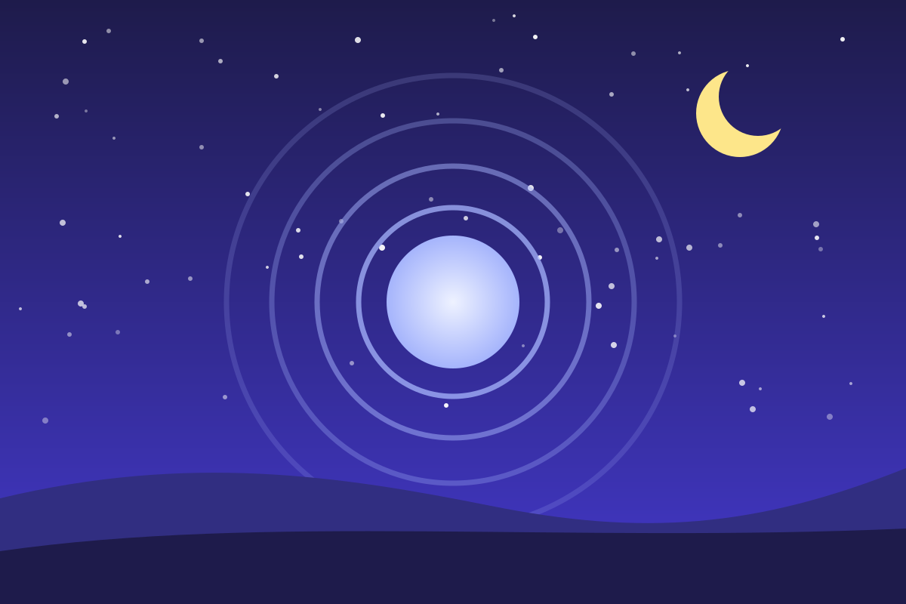

Вечерняя разгрузка
Мозг не выключается по щелчку. Ему нужен плавный переход от дневной суеты к отдыху, и этот переход можно выстроить с помощью нескольких простых ритуалов.

Почему трудно «выключиться»
После насыщенного дня в организме ещё высок уровень гормонов стресса, а в голове крутятся незавершённые дела. Яркий свет экранов вечером дополнительно сбивает внутренние часы: он задерживает выработку мелатонина — гормона, который готовит нас ко сну. В итоге тело лежит в кровати, а мозг продолжает работать.
Четыре ритуала
- Граница рабочего дня. Закройте ноутбук, отключите рабочие уведомления, переоденьтесь в домашнее. Действие, которое повторяется каждый вечер, становится для мозга сигналом: работа закончилась.
- «Выгрузка» мыслей. Потратьте 5 минут, чтобы выписать на бумагу всё, что тревожит, и план на завтра. Записанные дела не нужно держать в голове.
- Дыхание 4–7–8. Медленное дыхание с длинным выдохом успокаивает нервную систему. Попробуйте прямо сейчас — вместе с кругом ниже.
- Сканирование тела. Лёжа в кровати, переводите внимание от стоп к макушке и сознательно расслабляйте каждую часть тела: стопы, икры, бёдра, живот, плечи, лицо.
Дыхательная практика 4–7–8
Технику популяризировал американский врач Эндрю Вейл. Вдох носом на 4 счёта, задержка дыхания на 7, медленный выдох ртом на 8. Начните с четырёх циклов — это чуть больше минуты.
Дышите вместе с кругом
Если почувствуете головокружение, остановитесь и вернитесь к обычному дыханию.
Вечер по часам
| Когда | Что сделать |
|---|---|
| За 2–3 часа до сна | Последний плотный приём пищи |
| За 1–2 часа | Закончить интенсивную тренировку и рабочие дела |
| За 1 час | Приглушить свет, отложить гаджеты, принять тёплый душ |
| За 30 минут | Бумажная книга, «выгрузка» мыслей, дыхательная практика |
| Отбой | Прохладная, тёмная и тихая спальня |
Цифровой закат
- включайте на ночь режим «Не беспокоить» — пусть он пропускает только звонки от близких;
- заряжайте телефон вне спальни, а для подъёма заведите обычный будильник;
- если без экрана никак — включите тёплый ночной режим и уменьшите яркость.
Как это работает
Сон — не выключатель, а постепенное переключение режимов. Каждый вечерний ритуал снижает возбуждение нервной системы, а их повторение изо дня в день формирует привычку: мозг узнаёт знакомую последовательность и сам начинает готовиться ко сну. Поэтому главный секрет — регулярность. Обычно уже через одну-две недели засыпать становится заметно проще.